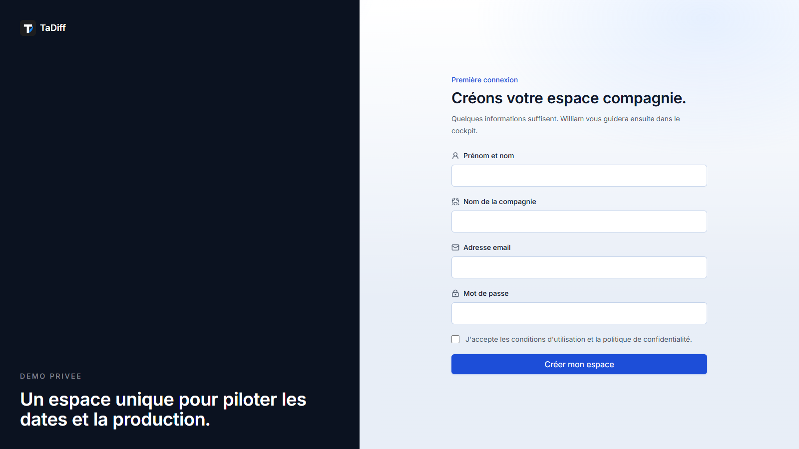
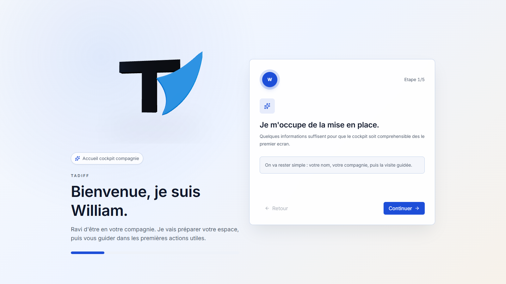
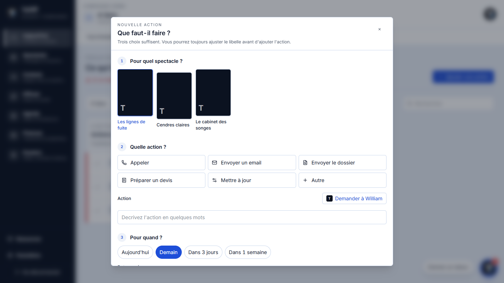
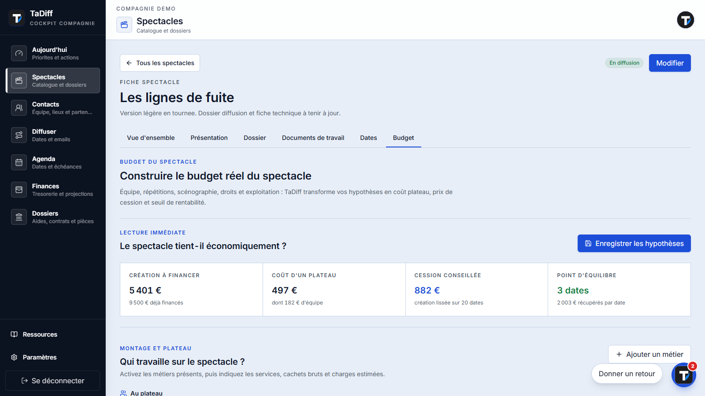

Une compagnie.
Un seul cockpit.
TaDiff · démonstration produit

Un démarrage guidé, sans écran vide

→

Le cockpit montre l'essentiel dès l'arrivée
Priorité claireTous les spectacles restent visibles en un regard
 Ouvrir ou ajouter
Ouvrir ou ajouterChaque spectacle concentre ses repères
 Dates · actions · dossier
Dates · actions · dossierLes pièces indispensables sont immédiatement lisibles
 Voir · remplacer · télécharger
Voir · remplacer · téléchargerCréer une action prend trois choix

Reliée au spectacleLe carnet sépare les personnes et les lieux
 Filtrer · sélectionner · agir
Filtrer · sélectionner · agirLes lieux deviennent un territoire de diffusion
 Action depuis la carte
Action depuis la carteLa diffusion montre les dossiers qui avancent
 Dossier actif
Dossier actifLe modèle économique est choisi visuellement
 Cession · coréalisation · location
Cession · coréalisation · locationUne série conserve uniquement les jours joués
 Jours réellement joués
Jours réellement jouésL'agenda relie dates et échéances
 Détail sans quitter le mois
Détail sans quitter le moisUne aide devient un dossier à faire avancer
 Échéance et pièces
Échéance et piècesLe mécénat suit les partenaires au même endroit
 Contact → montant → prochaine étape
Contact → montant → prochaine étapeLe budget traduit les hypothèses en seuil de rentabilité

Cession conseillée · point d'équilibreLa trésorerie donne une projection lisible
 30 · 60 · 90 jours
30 · 60 · 90 joursLe message combine contact, spectacle et pièces
 Gmail · Outlook · copie
Gmail · Outlook · copieWilliam lit le cockpit avant de répondre
 Aide contextualisée
Aide contextualiséeTout part du spectacle, tout revient au cockpit
SPECTACLEsource commune
Contacts
Lieux
Emails
Actions
Diffusion
Calendrier
Trésorerie
Subventions
Mécénat
William